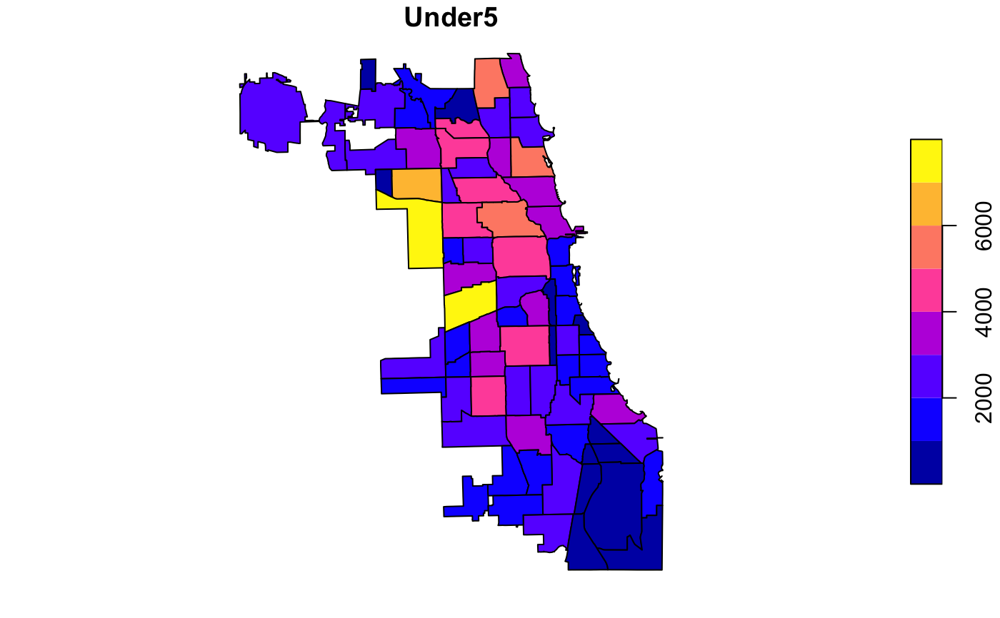

Public health and socio-economic indicators for the 77 community areas of Chicago, IL, 2014.
chisociohealth
An sf data frame with 77 rows, 86 variables, and a geometry column:
Community Area ID
Community Area Name
Tract
polygon area
polygon perimeter
Population in 2012
Population in 2014
Population change
Male Population in 2014
Female population in 2014
Population age 0-5 in 2014
Population age 0-18 in 2014
Population over age 21 in 2014
Population over age 65 in 2014
White population in 2014
Black population in 2014
American Indian population in 2014
Asian population in 2014
Native Hawaiian population in 2014
Population of other races in 2014
Hispanic population in 2014
Proportion of male in the overall population in 2014
Proportion of female in the overall population in 2014
Proportion of under 5 in the overall population in 2014
Proportion of under 18 in the overall population in 2014
Proportion of over 18 in the overall population in 2014
Proportion of over 21 in the overall population in 2014
Proportion of over 65 in the overall population in 2014
Proportion of white population in 2014
Proportion of black population in 2014
Proportion of American Indian population in 2014
Proportion of asian population in 2014
Proportion of native hawaiian population in 2014
Proportion of other races population in 2014
Proportion of hispanic population in 2014
Number of property crimes
Property crime rate in 2014
Number of violent crimes
Violent crime rate in 2014
Per Capita Income
2014 Population base for 2014 poverty counts
Number of people living in poverty in 2014
Number of children (age 0-18) living in poverty in 2014
Number of adults without a high school diploma in 2014
Number of high school graduates in 2014
Number of people who have some college education in 2014
Number of people who have a college degree in 2014
Number of people in the labor force in 2014
Number of people unemployed in 2014
Number of people with income below 50pct of the poverty line
Proportion of people with income below 50pct of the poverty line
Number of people with income below 125pct of the poverty line
Proportion of people with income below 125pct of the poverty line
Number of people with income below 150pct of the poverty line
Proportion of people with income below 150pct of the poverty line
Number of people with income below 185pct of the poverty line
Proportion of people with income below 185pct of the poverty line
Number of people with income below 200pct of the poverty line
Number of people with income below 200pct of the poverty line
Average SES
Average Childhood Opportunity Index
Average Economic Hardship Index
Average health literacy
Birth rate per 1000 residents
Fertility rate per 1000 females aged 15-44
Percent of live births with low birth weight
Percent of females delivering a live birth, in which prenatal care began in first trimester
Preterm births as percent of live births
Teen birth rate per 1000 females aged 15-19
Homicide deaths per 100,000 persons (age adjusted)
Breast cancer deaths per 100,000 females (age adjusted)
Cancer deaths per 100,000 persons (age adjusted)
Colorectal cancer deaths per 100,000 persons (age adjusted)
Diabetes-related deaths per 100,000 persons (age adjusted)
Firearm-related deaths per 100,000 persons (age adjusted)
Infant mortality rate: deaths per 1000 live births
Lung cancer deaths per 100,000 persons (age adjusted)
Prostate cancer deaths per 100,000 males (age adjusted)
Stroke deaths per 100,000 persons (age adjusted)
Childhood blood lead level screening, per 1000 children aged 0-6 years
Childhood lead poisoning per 100
Gonorrhea in females, per 10,000 females age 15-44
Gonorrhea in males, per 10,000 females age 15-44
Tuberculosis per 100,000 persons
Economic Hardship Index method based on the Intercity Hardship Index, by Richard P. Nathan and Charles F. Adams, Jr. in Understanding Urban Hardship, Political Science Quarterly 91 (Spring 1976): 47-62.). Main source: https://data.cityofchicago.org/Health-Human-Services/Public-Health-Statistics-Selected-public-health-in/iqnk-2tcu
Sf object, unprojected. EPSG 4326: WGS84.
if (requireNamespace("sf", quietly = TRUE)) { library(sf) data(chisociohealth) plot(chisociohealth["Under5"]) }